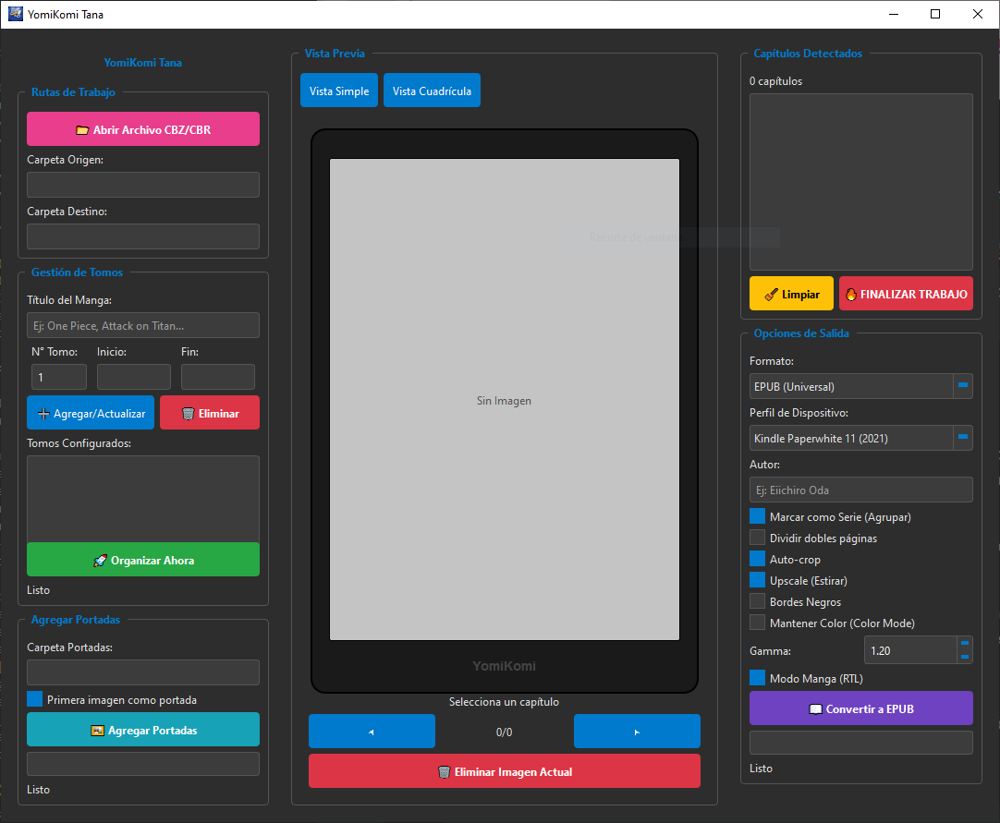

Prepara tus mangas y webtoons para Kindle o Tablets. Elimina bordes blancos y exporta a EPUB/CBZ en un solo clic.
Obtener para Windows
El algoritmo detecta y recorta los márgenes blancos inútiles. Divide automáticamente las páginas dobles para que encajen perfectas en pantallas verticales.
Interfaz construida para la comunidad mundial. Soporte integrado para Inglés, Español, Português y Japonés.
Tus archivos nunca salen de tu PC. A diferencia de los conversores web, YomiKomi procesa gigabytes de manga en segundos de forma 100% privada.
Únete a los demás usuarios de YomiKomi Tana. Comparte archivos, ayúdanos a mejorar la app reportando bugs o resuelve tus dudas.
¿Algo falló? Sube tu log de error o captura de pantalla para que podamos arreglarlo en la próxima versión.
📚¿Buscas un manga específico y no lo encuentras? Pide el CBZ a la comunidad o comparte tus tomos optimizados.
💬Discusión general, dudas sobre cómo configurar el gamma, resoluciones para Kobo/Kindle y consejos útiles.
Sí, es 100% Freeware. Puedes usar todas sus funciones sin límites. Si la app te ahorra tiempo, considera apoyar el desarrollo en Ko-fi.
Es un falso positivo común en programas nuevos empaquetados con Python. El código es seguro y procesa tus archivos localmente.
¡Por supuesto! Activa el "Modo Manga (RTL)" antes de convertir a EPUB y tu Kindle detectará el estilo japonés.
Asegúrate de que el archivo RAR no tenga contraseña. Si el problema persiste, repórtalo en nuestra sección de comunidad.
Software Freeware sin publicidad. Únete a los lectores que ya están optimizando su biblioteca digital.
Descargar Instalador (.exe)Windows 10/11 • 100% Seguro